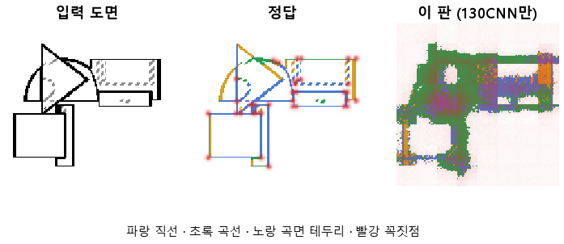

한 줄로
물음: CAD 모델의 앞단 CNN만 떼어 도면의 선을 찾게 학습하면, 곡선과 꼭짓점을 찾아낼까?
답: 곡선은 열에 여덟쯤 맞히지만 직선은 절반도 못 맞히고, 곡면 테두리는 거의 못 잡는다. 선이 없는 곳에도 많이 그린다. 목표선 7개 중 1개만 넘겨 판정은 실패다.
왜 이 판을 했나
우리 모델(127)은 부품 도면을 보고 CAD 설계를 짠다. 그 첫 단계가 CNN, 즉 그림에서 특징을 뽑는 부분이다. 설계 전체를 맞히게 학습하면 CNN이 선을 제대로 읽는지 따로 알 수 없다. 그래서 CNN만 떼어, 화소마다 선이 있는지와 무슨 선인지를 맞히게 했다. 선은 넷으로 나눈다. 직선, 곡선, 곡면 테두리(원통 옆면처럼 둥근 면이 꺾여 보이는 선), 숨은선(점선)이다.
바꾼 것 하나
학습 목표를 CAD 설계에서 선 찾기로 바꿨다. CNN 구조는 127과 같다. 학습 10바퀴, 학습 부품 3,000개, 시험 부품 299개다. 부품마다 위 · 앞 · 옆 도면 세 장을 128×128로 넣었다. 대조는 CNN을 빼고, 화소를 그대로 같은 마지막 판단 층에 넣어 똑같이 10바퀴 학습했다.
결과

| 이 판 (130) | 대조 (화소) | 목표 | 넘었나 | |
|---|---|---|---|---|
| 곡선을 곡선으로 | 0.78 | 0.76 | 0.90 | ✗ |
| 직선을 직선으로 | 0.47 | 0.33 | 0.90 | ✗ |
| 곡면 테두리를 제 종류로 | 0.23 | 0.15 | 0.70 | ✗ |
| 선 없는 곳에 잘못 그림 | 19.62 % | 22.10 % | 2 % 아래 | ✗ |
| 꼭짓점 (F1) | 0.27 | 0.05 | 0.75 | ✗ |
| 곡선, 대조보다 나음 | +0.03 | — | +0.15 | ✗ |
| 꼭짓점, 대조보다 나음 | +0.22 | — | +0.20 | ✓ |
선 줄은 정답이 그 종류인 곳을 그 종류로 칠한 비율이다. F1은 「찍은 점 중 맞은 비율」과 「정답 점 중 찾은 비율」을 함께 본 점수로, 1이면 완벽하다.
왜 이렇게 나왔나
확인한 것
- 곡선은 CNN 덕이 거의 없었다. 화소를 그대로 넣어도 0.76이라 차이가 0.03뿐이다.
- 꼭짓점은 CNN이 확실히 도왔다(0.05 → 0.27). 다만 정답 점은 0.59를 찾았는데, 찍은 점 중 맞은 것은 0.17이다. 너무 많이 찍는다.
- 숨은선은 목표선이 없지만 0.85로 네 종류 중 가장 잘 맞았다.
- 학습이 덜 끝났다. 시험 오차가 10바퀴 내내 줄었고(3.20 → 1.95), 학습 오차(1.99)가 시험 오차보다 높으니 외운 것도 아니다.
짐작 (아직 확인 안 함)
- 더 오래 돌리면 점수가 더 오를 것 같다. 다만 종류별 점수를 바퀴마다 재지 않아서, 어느 종류가 오를지는 모른다.
- 숨은선이 잘 된 것은 점선 모양이 뚜렷해서일 수 있다.
한계
- 시험 부품 299개로 한 번만 돌렸다. 다시 돌렸을 때의 흔들림은 재지 않았다.
- 오차가 아직 줄던 중에 끊었다. 실패가 CNN 구조 탓인지 학습량 탓인지 이 판만으로는 가를 수 없다.
- 대조(화소 그대로)도 10바퀴 내내 시험 오차가 4.79에서 4.31로 계속 내려가고 있었다. 대조도 덜 배운 상태에서 비교한 것이다.
배운 것과 다음
다섯 목표선 모두 못 넘었다. 가장 먼 것은 곡면 테두리, 직선, 헛선이고, 곡선도 목표에 못 미쳤다. CNN이 화소보다 확실히 더해 준 것은 꼭짓점 하나뿐이다.
- 같은 설정으로 바퀴 수만 늘리고, 종류별 점수를 바퀴마다 잰다.
- 헛선이 그려지는 자리를 그림으로 모아 확인한다.
- CNN의 어느 층이 선의 자리를, 어느 층이 종류를 아는지 따로 읽어 본다.